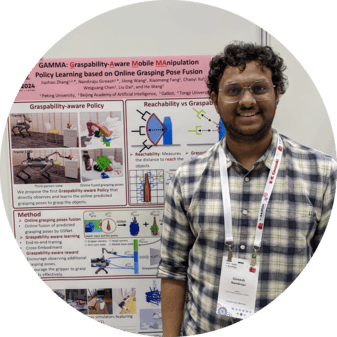
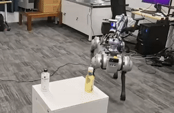
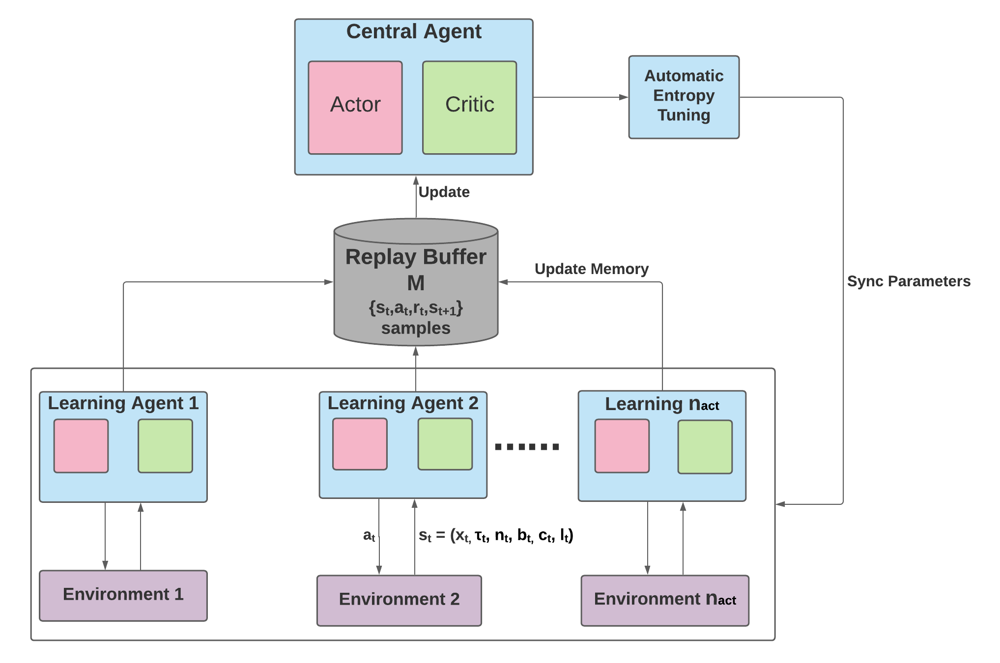
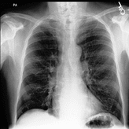

|
Gireesh Nandiraju
Hi there! I am a second year CS PhD student at Peking University advised by Prof. He Wang, and a student researcher at Galbot. My research is supported by Beijing Government Scholarship
Prior to PKU, I worked as a research assistant at IIIT Hyderabad, advised by
Prof. K Madhava Krishna. Even before that, I did my undergrad at BITS Pilani in Electronics and Instrumentation.
I am always open to research collaborations! If you are working on the topics of contact-rich/ bimanual manipulation, feel free to contact me!
Email /
CV /
Google Scholar /
Twitter /
GitHub /
WeChat
|
`

|
|
News
- [Jan 2026] MomaGraph is accepted as an
Oral at ICLR 2026 (Top 1% )
- [Jan 2025] One paper accepted at ICRA 2025
- [Sep 2024] Starting as a CS PhD student at EPIC Lab.
- [Aug 2024] Honored to recieve the Beijing Government Scholarship
- [Jan 2024] One paper accepted at ICRA 2024
- [Jan 2023] One paper accepted at ICRA 2023
|
|
Research
My long-term research goal is to build humanoid robots capable of navigating and manipulating objects in household environments. I am currently focusing on learning sim-to-real transferable skills for contact-rich manipulation. Here is some of my work (representative papers are highlighted):
|
|
|
HDFlow: Hierarchical Diffusion-Flow Planning for Long-horizon Robotic Assembly
Nandiraju Gireesh, Yuanliang Ju, Chaoyi Xu, Weiheng Liu, Yuxuan Wan, He Wang
Under Review
EWM Workshop @ NeurIPS 2025
|

|
MomaGraph: State-Aware Unified Scene Graphs with Vision-Language Model for Embodied Task Planning
Yuanchen Ju*, Yongyuan Liang*, Yen-Jen Wang*, Nandiraju Gireesh, Yuanliang Ju, Seungjae Lee, Qiao Gu, Elvis Hsieh, Furong Huang, Koushil Sreenath
ICLR 2026 Oral (Top 1%)
|
|
|
Watch Less, Feel More: Sim-to-Real RL for Generalizable Articulated Object Manipulation via Motion Adaptation and Impedance Control
Tan-Dzung Do, Nandiraju Gireesh, Jilong Wang, He Wang
ICRA 2025
LFDM Workshop @ CoRL 2024
MRM-D Workshop @ CoRL 2024
|
|

|
GAMMA: Graspability-Aware Mobile MAnipulation Policy Learning based on Online Grasping Pose Fusion
Jiazhao Zhang*, Nandiraju Gireesh*, Jilong Wang, Xiaomeng Fang, Chaoyi Xu, Weiguang Chen, Liu Dai, He Wang
ICRA 2024
|

|
Sequence-Agnostic Multi-Object Navigation
Nandiraju Gireesh*, Ayush Agrawal*, Ahana Datta*, Snehasis Banerjee, Mohan Sridharan, Brojeshwar Bhowmick, Madhava Krishna
ICRA 2023
|

|
Object Goal Navigation using Data Regularized Q-Learning
Nandiraju Gireesh, D. A. Sasi Kiran, Snehasis Banerjee, Mohan Sridharan, Brojeshwar Bhowmick, Madhava Krishna
CASE 2022
|

|
Spatial Relation Graph and Graph Convolutional Network for Object Goal Navigation
D. A. Sasi Kiran*, Kritika Anand*, Chaitanya Kharyal*, Gulshan Kumar, Nandiraju Gireesh, Snehasis Banerjee,
Ruddra dev Roychoudhury, Mohan Sridharan, Brojeshwar Bhowmick, Madhava Krishna
CASE 2022
|
|  |
SAC-ABR: Soft Actor-Critic based deep reinforcement learning for Adaptive BitRate streaming
Mandan Naresh, Nandiraju Gireesh, Paresh Saxena, Manik Gupta
COMSNETS 2022
|
|  |
XRayGAN: Consistency-preserving Generation of X-ray Images from Radiology Reports
Xingyi Yang, Nandiraju Gireesh, Eric Xing, Pengtao Xie
arXiv 2020
|
|
Service
- Reviewer: ICML, ICLR, ICRA, IROS, RA-L.
|
|
{kind=link}